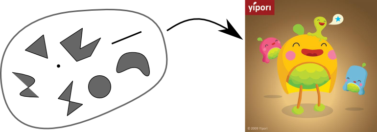
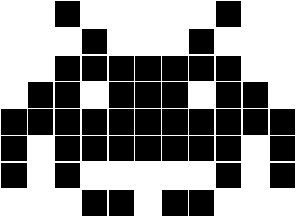
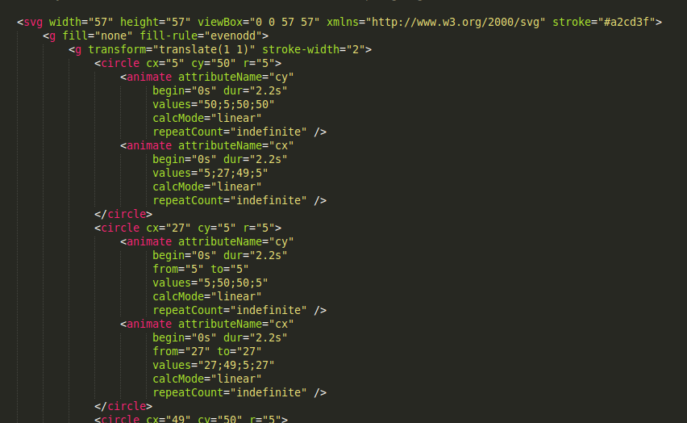

Vector Graphics
Today, I'm going to talk about vector graphics. Probably most of you already heard about it and know what it is. So let me tell you something more about this subject.
Plan:
- What is Vector Graphics
- Compare to raster graphics
- Software to editing vector graphics
- Applications
- Summarize pros and cons
- Questions
I've divided my presentation into few parts. First I tell you a definition, what exactly is Vector Graphics. Next I compare it to well-known raster graphics. Then I present you few of most known programs to creating and editing vector graphics. Enumerate best uses for vector images. Later summarize pros and cons resulting from the use of vector graphics. And finally there will be time for additional questions about this topic.
Vector graphics is the use of geometrical primitives such as points, lines, curves, and shapes or polygons (all of which are based on mathematical expressions) to represent images in computer graphics
As definded at this slide, vector graphics use geometrical primitives, points, lines, curves, shapes and polygons to represent images. In other words, it transforms basic mathematical function to composed images. One of the most commonly used primitives is Bezier curves. First use of them was in Renault factory in 1959 to design automobile bodies.
Let's compare
Raster graphics
vs

Vector Graphics
Let's move to the next point. Camparison Vector Graphics to Raster Graphics.
Scalability raster
First issue is ability to scale images to any size. To illustrate this I show one simple graphic, which I create some time ago, in two formats. First one is saved as raster graphics. As you see, in original size it looks good, with sharp edges. Of course I can scale it down and it should still looks acceptably well. But when I want to scale it up...
It starts looks blurry. As you can see, (or not because of the quality of overhead projector.) Previously sharp edges are blurred and pixelated.
Scalability vector

Now I do the same task, but now on vector file. As you see, graphics in small size looks exactly the same as raster file. But when I scale it up...
It looks still sharp. Edges are sharp. Rounded edges are still rounded not pixelated as we saw before with raster example. With vector graphics I can scale image to any size I want. There are no limits.
File size
The size of vector graphics files is not dependent on the size of the image, but on its complexity.
Suited for lossless data compression algorithms.
Next issue is the size of the result file contains our image. In raster graphics it's relatively easy estimate the resulting file size. It depends only on dimension of the image. The larger dimension of the graphic, the large resulting file size. There are some compression algorith but general rule is the same. In vector graphics file size depends on complexity of the graphics. The more different element are in the image the larger size of the file. As I say previously elements can be described by mathematical expressions, so it's possible to store data in normal text file. And it very efficent to compress.
Animation
As you can see, animation in vector graphic is possible. It's very easy to animate images. You only specific a keyframes and way which it will, be animated between keyframes. That's all.
Editing
Diferent from editing raster graphics.
Almost impossible to get photo realistic effects.
Possibility to create graphics in text editor.
Editing vector graphics at first sight is a little bit harder. Because in opposite to raster graphics is not similar to painting on canvas, but more about creating something from shapes. Compositing elements to each other. As I said previously there everything is described by mathematical expressions, so it's almost impossible to create photo realistic effects. Because in pictures there are more noises and much complex textures than can be done in simple way by use of geometrical shapes. As a curiosity using a specialized graphics software is necessary. Because vector graphics can be edited in normal text editor. The other question is, if it's comfortable.
Software to edit:
- Adobe Ilustrator
- Corel Draw
- Inkscape
Moving to the next point of presentation. There are few most popular software to create and edit vector graphics. First two are well-known application from Adobe and Corel, but I personally recommend the last one. Inkscape is cross platform and IMO user-friendly vector graphics editor. There you can see what it looks like, Additionaly I said it's almost impossible to archieve photo realistic quality, but you have to admit the car looks amazing. But the most important thing is that Inkscape is free and open source. It's native file format is Scalable Vector Graphics.
The World Wide Web Consortium (W3C) standard for vector graphics is Scalable Vector Graphics (SVG)
In 1999 W3C developed open file standard Scalable Vector Graphics, in short SVG. Images are defined in XML text files. This means that they can be scripted for example in Java Script to archieve more complex animation or even more responsive to user actions. And like every text file they could be compressed. SVG is supported by all major modern web browsers, so there is no obstacle to use it in the web applications.
Application
- Logotypes
- Animation
- Printing On Paper
- Webpages
- Embroidery
- 3D Graphics
The next slide shows few most popular application of Vector Graphics. Without typical uses like creating logotypes or simple animations. There are other like creating graphics for printing puprose, because vector can be scaled to any size, we can print it on paper with any dimentions. As I said it could be saved as simple XML and it's supported by web browser so it's possible to create whole webpages in vector graphics. Next application is embroidery. Computer-controlled sewing machines or plotter can quickly make custom desing but they needs to be steered out the relevant shapes not pixels. The last thing 3D graphics, however they are rendered as raster image, in the stage of creating, there are used vectors shapes but instead of 2 there are 3 dimensional coordinates described each points.
Pros:
- Resizable without quality loss.
- File size not depend on the dimensions of image.
- Simple text/xml which mean it can be modified later via scripts.
- Animation.
Cons:
- Harder to create, edit.
- Almost impossible to archieve photo realism.
- Larger files in more detailed images.
Finally lets summarize pros and cons of vectors graphics. It could be resizable without quality loss. Size of file not depend on the dimensions. It could be scripted. Animated. But there are some cons. At the begining is harder to create, edit. Not photo realistic. And the last, in more detailed images file size might be much larger than adequate raster image.
Questions?
That's all. Any questions?
Thanks for your attention.
Thanks for your attention.